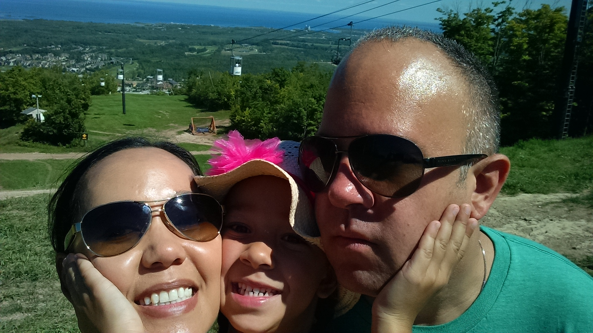
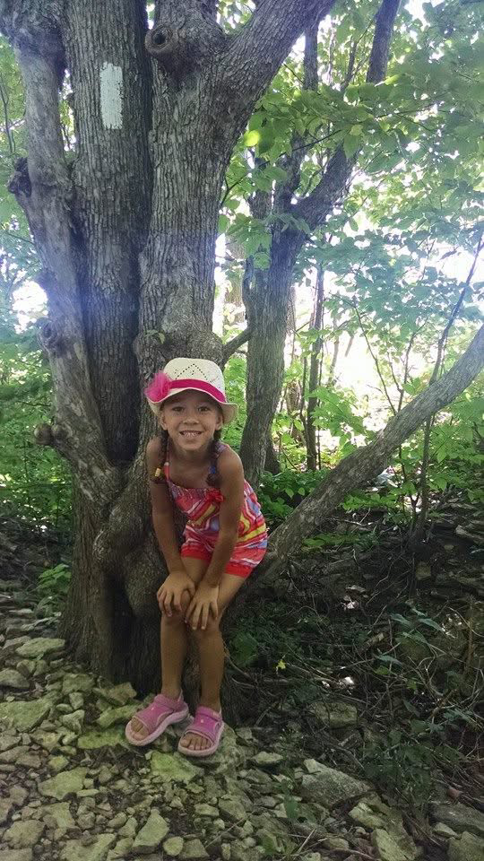
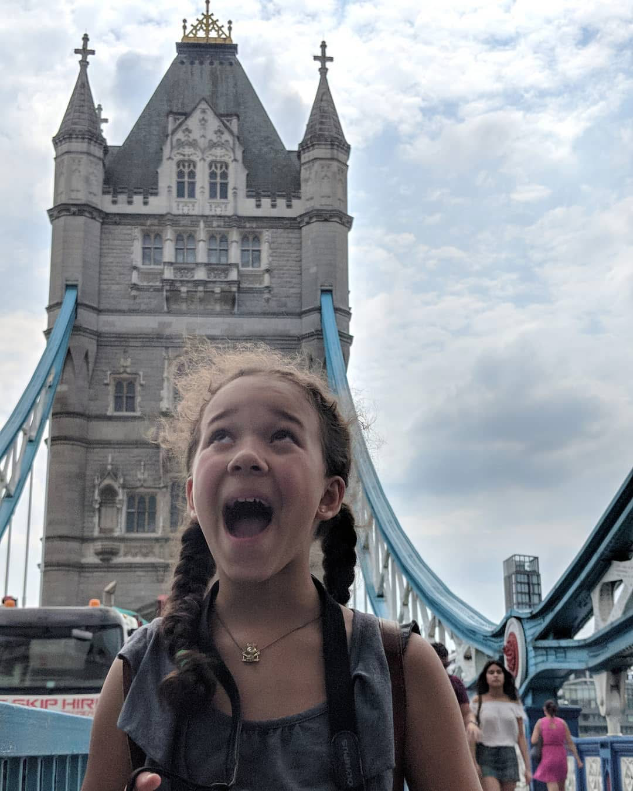
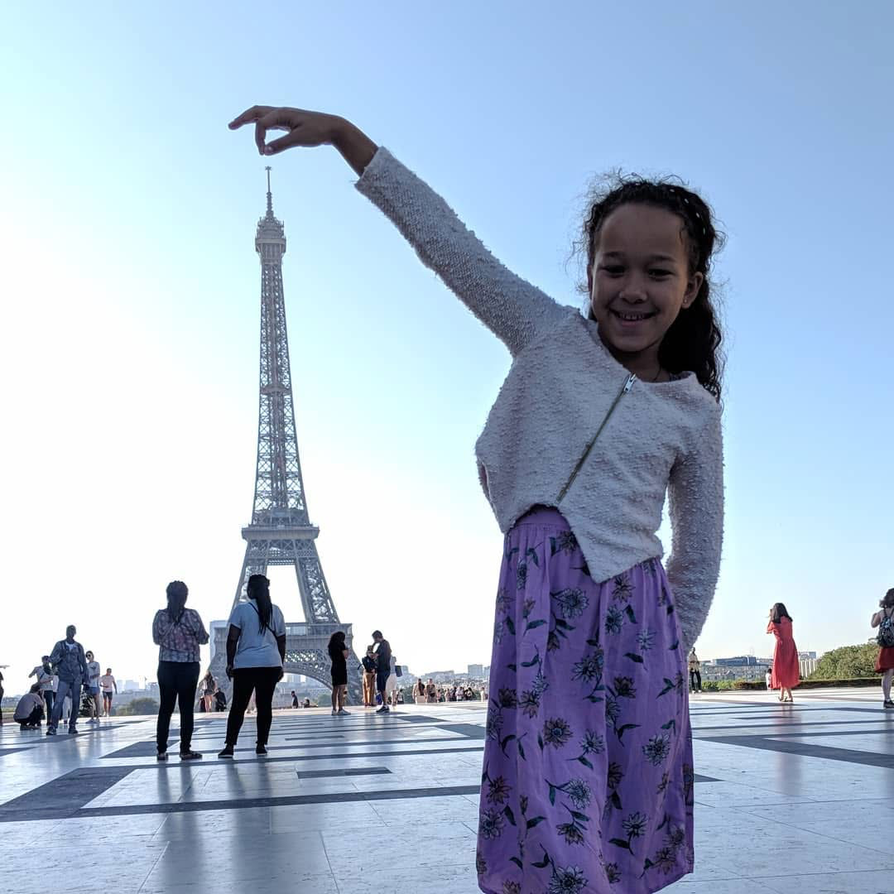
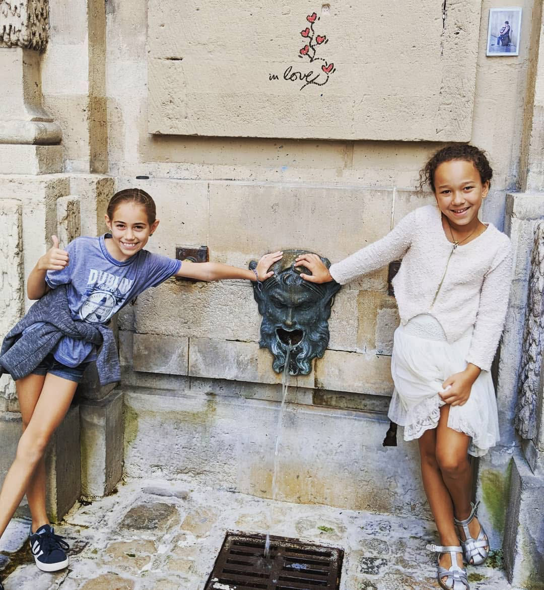
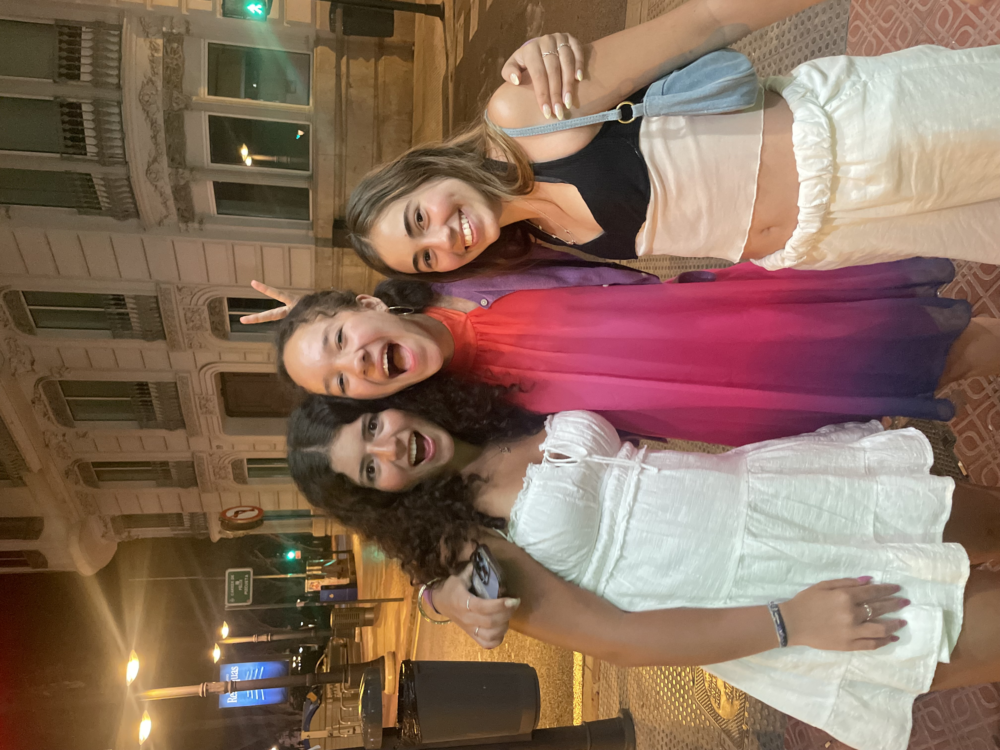
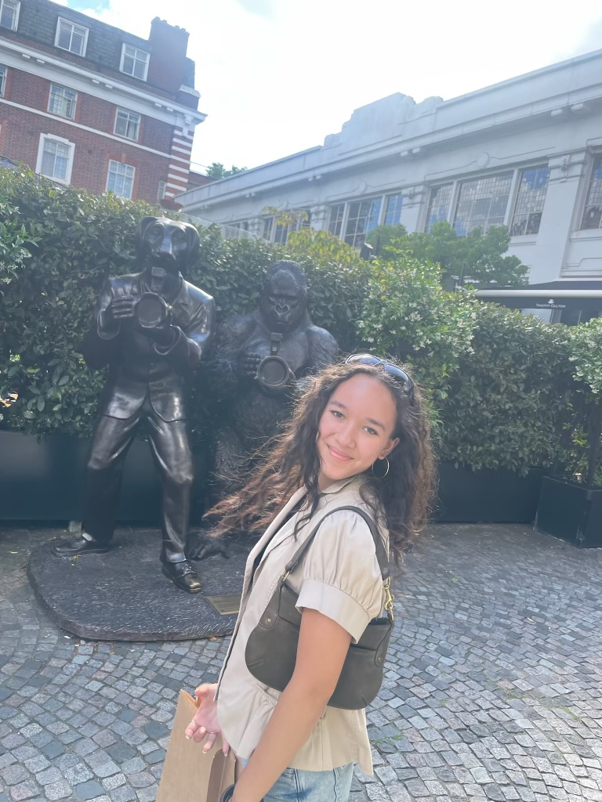
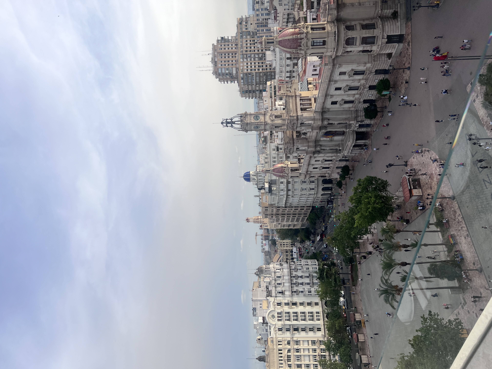

Vacation #1
More about this memory.



Vacation #2
More about this memory.



Vacation #3
More about this memory



More about this memory.


More about this memory.



More about this memory


